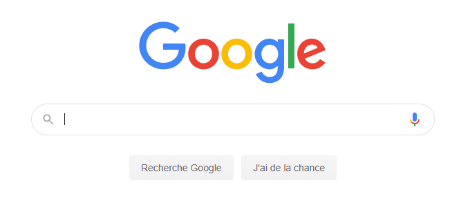
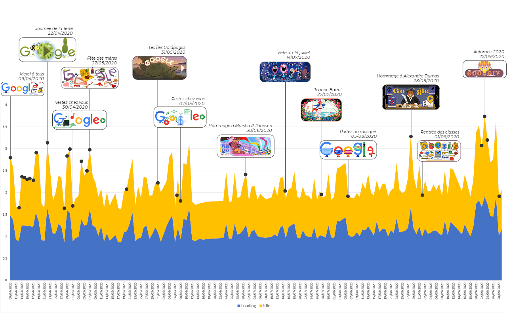
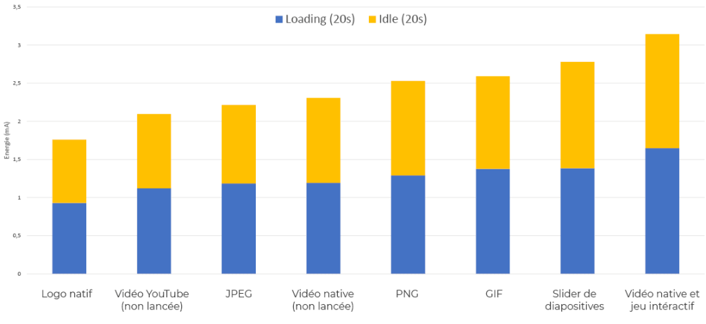
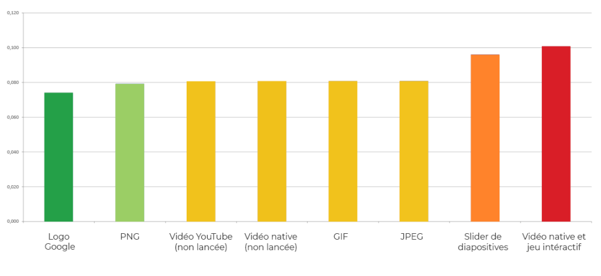
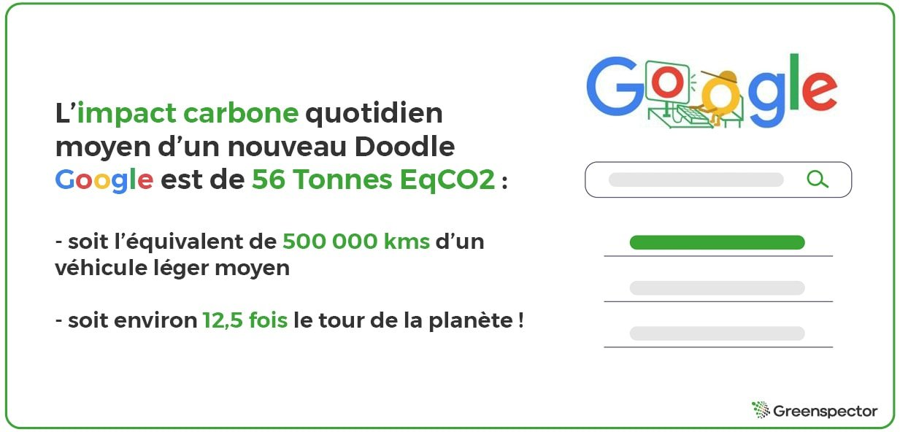

Introduction

Chez Greenspector, nous aimons nous poser la question de l’impact de consommation en ressources et énergie de certains sites, certaines applications, certaines fonctionnalités ou widgets sur le web. Cette fois-ci, ce sont les Doodles de Google qui ont retenu notre attention. Nous avons automatisé des mesures de consommation sur mobile sur la page d’accueil française Google afin que celle-ci soit mesurée tous les jours depuis Avril 2020. Dans cet article, nous tenterons de répondre aux questions suivantes :
- Quel est l’impact comparé des différents types de Doodles ?
- Quelles consommations de données et d’énergie et quel impact environnemental occasionnent-ils par rapport à la page standard ?
- Quel impact carbone projeté approché à l’échelle mondiale ?
Qu’est-ce qu’un Doodle ?
Le Google Doodle est une modification temporaire du logo Google sur la page d’accueil du moteur de recherche liée à une journée ou thématique particulière. Créés pour célébrer des évènements particuliers tels que des fêtes nationales, anniversaires de célébrités ou autres hommages, le premier Doodle a fait son apparition en 1998 pour le festival Burning Man. Il est généralement visible soit simultanément dans un grand nombre de pays soit dans un pays en particulier.
Consulter la méthodologie
Vue d’ensemble de la consommation d’énergie (mAh)

Nous avons mesuré la page d’accueil française de Google du 9 avril 2020 au 28 septembre 2020. Les points noirs représentent les Doodles visibles en France autres que le logo natif, ces derniers sont conservés chronologiquement dans un historique visible sur le site Doodle de Google. Le bleu correspond à l’étape de chargement et le jaune à l’étape d’inactivité en premier-plan de la page. On le voit de nouveaux Doodles reviennent assez souvent et compte tenu de la popularité de Google, va impliquer un impact sur l’ensemble des devices utilisateurs et sur les réseaux.
Consommation moyenne d’énergie (mAh) par type de Doodle
On remarque que le format Youtube (fenêtre de vidéo dont la lecture n’est pas automatique) est le type de Doodle le moins consommateur en moyenne en énergie (2,09 mAh) soit +15% par rapport au logo natif Google (1.76 mAh).
Nous retrouvons ensuite le format JPEG, deuxième du classement avec une consommation moyenne de 2,21 mAh, soit +20% par rapport au logo natif.
Sur nos 40 secondes de test et sans surprise, le format de Doodle le plus consommateur en énergie est celui de la vidéo native + jeu interactif (3,14 mAh) soit +43% de consommation que le logo Google, quasiment le double.

Le type de Doodle le plus plébiscité par Google est le GIF, celui-ci revient 17 fois sur notre benchmark de 29 Doodles. Il arrive en 5ème position du classement avec une consommation moyenne de 2,59 mAh soit +32% par rapport à notre référence du logo Google. De plus, on observe que les dimensions et le poids des Doodles ne sont pas constants pour un même format (JPEG, PNG ou GIF).
Projections carbone
Projections de l’impact carbone par type de Doodles
Les pages sans Doodle affichant uniquement le logo natif de Google consomment en moyenne 0,074 gEqCO2 soit 0,66 mètres effectués en véhicule léger. Tandis que les Doodles consomment (tous format confondus) en moyenne 0,082 gEqCO2 soit 11% plus et 0,76 mètres effectués en véhicule léger.
Le type de Doodle le moins consommateur est le format PNG (0,079 gEqCO2) avec un impact plus élevé que la référence du Logo de 6%. Suivi par le format de la vidéo Youtube (lecture non automatique) avec 0,080 gEqCO2 soit 8% de plus que le logo Google. Le format le plus consommateur est celui de la vidéo native suivie du jeu intéractif : 0,101 gEqCO2 soit 26% de plus, juste après le format du slider de diapositives : 0,096 gEqCO2 (+23%).

Projections en fonction du nombre d’utilisateurs et recherches
D’après notre récente étude sur les moteurs de recherches, chaque seconde, se sont près de 80 000 recherches qui sont réalisées sur le moteur de recherche Google par les internautes du monde entier. Pour chaque seconde de recherche, l’impact carbone sans Doodle est de : 5 920 gEqCO2 soit l’équivalent d’impact carbone de 52 km effectués en véhicule léger contre 6 560 gEqCO2 pour une recherche moyenne avec Doodle soit 58 km effectués en véhicule léger.
En une journée, on estime le nombre de recherche à 6 – 9 milliards. En projetant l’impact carbone d’une recherche avec et sans Doodle sur une journée on obtient :
– Avec Doodle : 567 Tonnes EqCO2
– Sans Doodle : 511 Tonnes EqCO2

L’impact supplémentaire des Doodles dans le monde, sur la base d’une projection des Doodles Français, donc pour chaque journée d’un nouveau Doodle est de 56 Tonnes EqCO2, soit l’équivalent de 500 000 km d’un véhicule léger moyen, soit environ 12,5 fois le tour de la planète !
En tant que concepteur de site web et d’application, une bonne pratique en lien avec ce constat est de faire attention au contenu qui est poussé : vous pouvez avoir un système de base très efficient mais avoir un usage au final qui est beaucoup plus consommateur que ce que vous aviez estimé initialement…
Méthodologie GreenspectorPour chacune de ses applications, mesurées sur un smartphone S7 (Android 8), le scénario utilisateur a été réalisé au travers de notre GREENSPECTOR Test Runner, permettant la réalisation de tests automatisés.
Chaque mesure est la moyenne de 4 mesures homogènes (avec un écart-type faible). Les consommations mesurées sur le smartphone donné selon un réseau de type wifi peuvent être différentes sur un PC portable avec un réseau filaire par exemple. Pour chacune des itérations, le cache est préalablement vidé.
Pour évaluer les impacts des infrastructures (datacenter, réseau) dans les calculs de projection carbone, nous nous sommes appuyés sur la méthodologie OneByte basée sur des données réelles mesurées du volume de données échangées. Cette méthodologie d’évaluation tient compte de la consommation de ressources et d’énergie en usage pour les équipements sollicités. Comme c’est une approche très macroscopique, elle est soumise à une incertitude et pourrait être affinée pour s’adapter à un contexte, à un outil donné. Pour la projection Carbone, nous avons pris l’hypothèse d’une projection 50% via un réseau wifi et 50% via un réseau mobile.
Pour évaluer les impacts du mobile dans les calculs de projections carbone, nous mesurons sur device réel la consommation d’énergie du scénario utilisateur et afin d’intégrer la quote-part d’impact matériel, nous nous appuyons sur le taux d’usure théorique généré par le scénario utilisateur sur la batterie, première pièce d’usure d’un smartphone. 500 cycles de charges et de décharges complètes occasionnent donc dans notre modèle un changement de smartphone. Cette méthodologie et mode de calcul ont été validés par le cabinet de conseil spécialiste de l’éco-conception Evea.
Vous souhaitez évaluer la sobriété et la performance de votre site web ou application mobile ? Contactez-nous !